Descoperă structura și funcțiile celulei în corpul uman.
Ce este celula?
Celula este unitatea de bază structurală, funcțională și genetică a tuturor organismelor vii.
Poate exista singură (organisme unicelulare) sau alături de alte celule, formând țesuturi (organisme pluricelulare).
A fost descoperită pentru prima dată în 1665 de Robert Hooke,
iar citologia este știința care studiază celula din punct de vedere structural, funcțional, anatomic și morfologic.
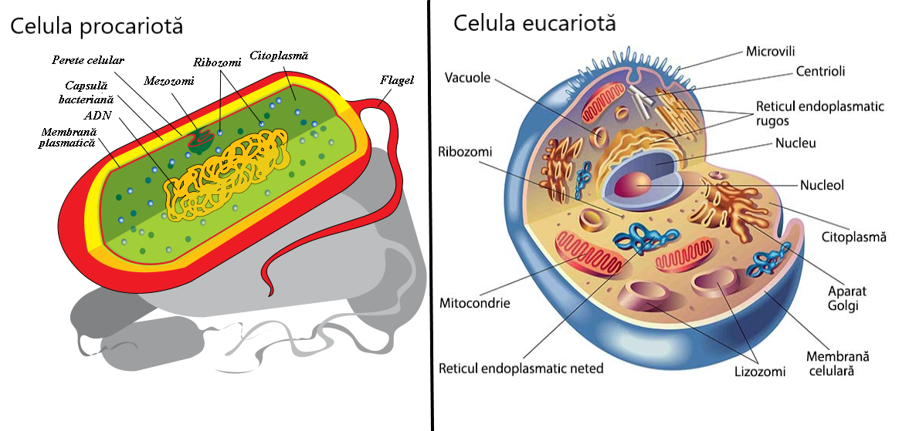
Funcții, Formă, Dimensiuni și Durata de viață a celulelor
🔧 Funcții ale celulei
Pot conserva mediul intern, pastrandu-l intr-o stare de echilibru (homeostazie)
Sintetizează compuși proprii după un cod genetic
Au capacitatea de refacere și autoreproducere
Se adaptează la condtiile din mediu
🔵 Forma celulelor
Forma celulelor diferă în funcție de poziția și rolul lor:
Stelată
Fusiformă
Sferică
📏 Dimensiuni ale celulelor
Foarte mici: Bacterie ~0.005 µm
Mici: Spermatozoid ~5 µm
Medii: Hematii ~7-7.5 µm
Standard: Majoritatea celulelor ~10-100 µm
Vizibile cu ochiul liber: Fibre musculare, celule din citrice
Gigantice: Ovocitul (ou) de struț ~9 cm
⏳ Durata de viață a celulelor
Celulele hepatice: ~10–20 zile
Globule roșii (hematii): ~120 zile
Globule albe(leucocite): ~1–3 zile
Compoziția chimică a materiei vii
În celulă se găsesc peste 60 de elemente chimice, dintre care 6 sunt esențiale:
Carbon (C), Hidrogen (H),
Oxigen (O), Azot (N),
Fosfor (P) și Sulf (S).
Perete celular: Prezent doar la celulele vegetale, oferă protecție și formă.
Diferențe între celulele procarionte și eucarionte
Caracteristică
Celule Procarionte
Celule Eucarionte
Nucleu
Nu au nucleu delimitat
Au nucleu delimitat de membrană
Dimensiune
Mai mici (1-10 µm)
Mai mari (10-100 µm)
Organite
Nu au organite delimitate
Au organite delimitate (ex: mitocondrii, reticul endoplasmatic)
Exemple
Bacterii
Plante, animale, fungi
Celula procariotă
Definiție: Celula procariotă este o celulă simplă, fără un nucleu adevărat delimitat de o membrană.
Organizare: Materialul genetic (ADN) este liber în citoplasmă, într-o zonă numită nucleoid.
Dimensiuni: De obicei mai mici decât celulele eucariote, între 1–10 micrometri.
×
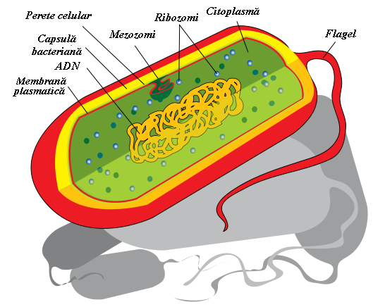
Structuri principale:
Peretele celular:
situat la exterior, cu rol protector
format chimic din mureină
la cianobacterii: teacă gelatinoasă + cili și flageli (locomoție)
Membrana celulară:
numită și plasmalemă
separă citoplasma de peretele celular
conține lipide și proteine (structură lipoproteică)
Citoplasma:
umple interiorul celulei
lichid vâscos, incolor
conține apă, substanțe organice și anorganice
nu prezintă curenți citoplasmatici
Mezozomul:
invaginare a membranei celulare
roluri:
respirație celulară
ancorarea moleculei de ADN (nucleoidul)
Nucleoidul:
fără membrană nucleară
se află în citoplasmă
ancorat de mezozom
format dintr-o singură moleculă circulară de ADN = un singur cromozom bacterian
roluri:
deține și transmite informația genetică
creșterea și multiplicarea celulei
Ribozomii:
numiți și granulele lui Palade sau „fabrici de proteine”
alcătuiți din ARN + proteine
au două subunități
rol: sinteza proteinelor
Aparatul fotosintetic:
conține lamele fotosintetice
rol: fotosinteză
Sistemul vacuolar:
totalitatea vacuolelor cu membrană vacuolară
conțin suc vacuolar: apă + substanțe diverse
Substanțe de rezervă (incluziuni ergastrice):
depozitate sub formă de incluziuni
rol: rezervă de energie sau substanțe nutritive
Celula eucariotă
Definiție:
Celula eucariotă este o celulă complexă, care are un nucleu adevărat delimitat de o membrană nucleară și prezintă organite celulare specializate.
Dimensiuni și organizare:
Celulele eucariote sunt mai mari decât cele procariote, având dimensiuni cuprinse între aproximativ 10 și 100 micrometri. Ele au o organizare internă complexă, cu compartimente separate, fiecare având funcții specifice.
×
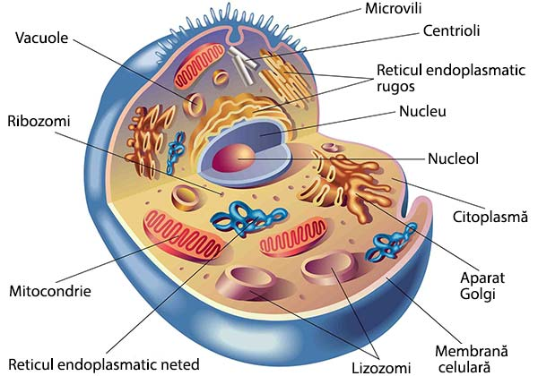
Se găsesc în organisme din regnul:
🦠 Protista
🍄 Fungi
🌿 Plante
🐾 Animale
Componente de bază:
Membrana celulară
Citoplasma
Nucleu
Prezintă organite celulare:
Cu membrană dublă:
Nucleu
Plastide
Mitocondrii
Fără membrană:
Ribozomi
Centrozomi
Cu membrană simplă: restul organitelor
Corpul celulei eucariote se numește protoplast și prezintă două tipuri de componente:
Nevii (neprotoplasmatice):
Peretele celular
Incluziunile ergastice
Vacuolele
Vii (protoplasmatice): restul componentelor
Comparație între celula vegetală și cea animală:
×
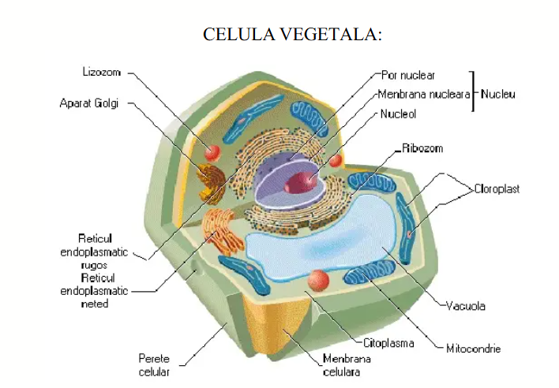
×
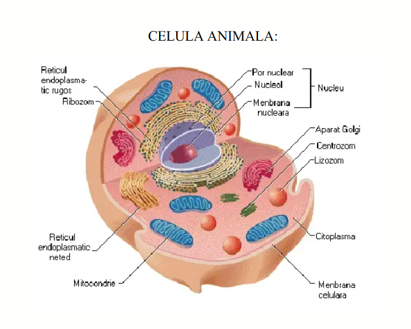
🌿 Celula vegetală
🐾 Celula animală
Are perete celular
-
Are plastide
-
Are vacuole mari si permanente
Are vacuole mici si temporare
-
Are centrozom
🧱 Peretele celular
Se găsește la:
🦠 bacterii – Regnul Monera ← format din MUREINĂ
🍄 ciuperci – Regnul Fungi ← format din chitină
🌿 celula vegetală – Regnul Plante ← din punct de vedere chimic este format din:
• celuloză – oferă elasticitate 🌱
• hemiceluloză– oferă plasticitate 🧬
• pectină– oferă plasticitate 🧬
📌 Peretele celular este o structură rigidă care înconjoară membrana celulară a celulelor vegetale, bacteriilor și ciupercilor. Acesta oferă protecție, suport și formă celulei.
🌳 La tulpinile lemnoase (arbori, arbuști) pe lângă peretele celular primar apare peretele celular secundar ⇒ sporirea rezistenței
🎯 Rolul peretelui celular:
✅ Asigură protecție
📏 Asigură poziția în spațiu al plantelor
🌪️ Asigură rezistența plantelor la acțiunea factorilor din mediu (vânt, furtună, ploi)
💧 Asigură transportul de substanțe (fiind permeabil pentru apă și majoritatea substanțelor solubile în apă)
🧬 Membrana celulară
📌 Funcții
📦 Delimitează spațiul celular
📍 Se găsește:
la exterior în celula animală
sub peretele celular în celula vegetală
🔁 Transportă substanțe:
⚡ Activ (cu consum de energie)
💤 Pasiv (fără consum de energie)
⚖️ Asigură homeostazia (echilibrul celulei)
🔒 Are permeabilitate selectivă
🧪 Structură generală
Este de natură fosfolipoproteică
Conține în cantități mari:
🧪 Lipide
🧫 Proteine
Conține în cantități mici:
🍬 Glucide
🧈 Colesterol – reduce fluiditatea membranei
🧿 Are aspect de „mozaic fluid”
💧 Lipide
Reprezentate de fosfolipide
Sunt dispuse pe două straturi
Prezintă:
💧 Partea hidrofilă
🔥 Partea hidrofobă
🔬 Proteine
Sunt macromolecule
Din punct de vedere structural:
🔗 Transmembranare
🧷 Extrinseci
🧷 Intrinseci
Din punct de vedere funcțional:
🚪 Canale
📡 Receptori
🏗️ Susținere
🧬 Markeri
🧫 Enzime
🧫 Citoplasma
🔹 este masa fundamentală a celulei
🔹 umple interiorul celulei între membrana nucleară și cea celulară
🔹 prezintă curenți citoplasmatici, antrenând în această mișcare și o serie de organite celulare precum mitocondriile și cloroplastele
🔹 este formată din 2 părți:
– este un lichid vâscos, semitransparent, incolor
– este un sistem coloidal format din particule numite coloizi/micele ce se găsesc într-o continuă mișcare Browniană
– oferă arhitectura celulei
– este o rețea tridimensională de molecule proteice, pe care se dispun organitele celulare
🧠 Nucleul
🔹 Este centrul de comandă și control al celulei
🔹 Este "sediul eredității"
🔹 Are acizi nucleici:
🧬 prin ADN: deține și transmite informația genetică
🧬 prin ARN: determină sinteza proteinelor
🔬 Structura nucleului
🔸 1–2 nucleoli
🔸 membrană externă
🔸 membrană internă
🔸 spațiu intermembranar
🔸 ribozomi
🔸 pori nucleari
🔸 nucleoplasmă (carioplasmă)
• partea lichidă: cariolimfă
• filamente de cromatină (ADN)
×
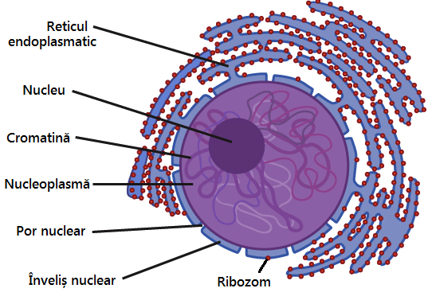
🔋 Mitocondria
🔹 Este un organit celular:
• cu membrană dublă
• autodivizibil
• cu material genetic propriu – ADN, ARN mitocondrial
×
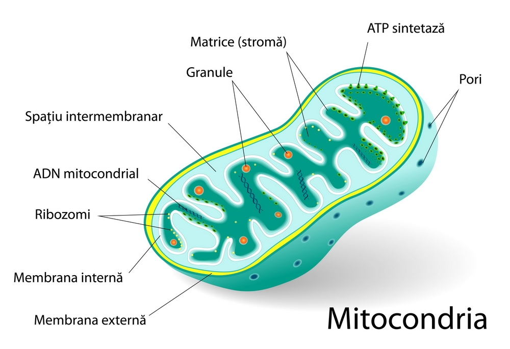
📌 Roluri
Principal: realizează respirația celulară și produce energie înmagazinată în ATP (acid adenozintrifosforic)
👉 De aceea, mitocondriile sunt numite: „uzinele energetice ale celulei”
Secundar: transportă ioni și contribuie la sinteza proteinelor și lipidelor
⚙️ Respirația celulară
🔸 Etapa 1: Glicoliza
• are loc în hialoplasmă
• anaerobă (fără oxigen)
• ardere parțială → compuși organici intermediari
• produce puțină energie: 2 moli ATP
🔸 Etapa 2: Etapa mitocondrială
• are loc în mitocondrie
• aerobă (cu oxigen)
• ardere totală → produși finali
• produce multă energie: 36 moli ATP
🔬 Ribozomi – Micile fabrici de proteine 🧬
Ribozomii sunt organite celulare care joacă un rol esențial în sinteza proteinelor. Aceștia sunt compuși din ARN și proteine și se găsesc în citoplasmă sau atașați de reticulul endoplasmatic.
📛 se mai numesc granulele/ corpusculii lui Palade
⚪ au formă sferică
🧪 prezintă ARN+ proteine
🧩 prezintă 2 subunități
💪 au rol în sinteza proteinelor
×
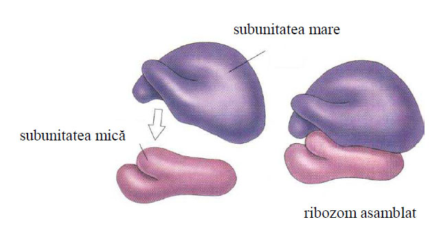
🧫 Plastide
Plastidele sunt organite celulare specifice plantelor, care au roluri variate, inclusiv în fotosinteză și stocarea substanțelor nutritive.
🔁 cu membrană dublă
🧬 autodivizibile
🧾 cu material genetic propriu: ADN, ARN plastidial
🌿 se găsesc la:
📗 celulele vegetale
🦠 protiste fotosintetizatoare
🔍 Din punct de vedere funcțional plastidele pot fi:
Centrozomul este o organită esențială în diviziunea celulară, situată aproape de nucleu și formată dintr-un complex centriolar.
×
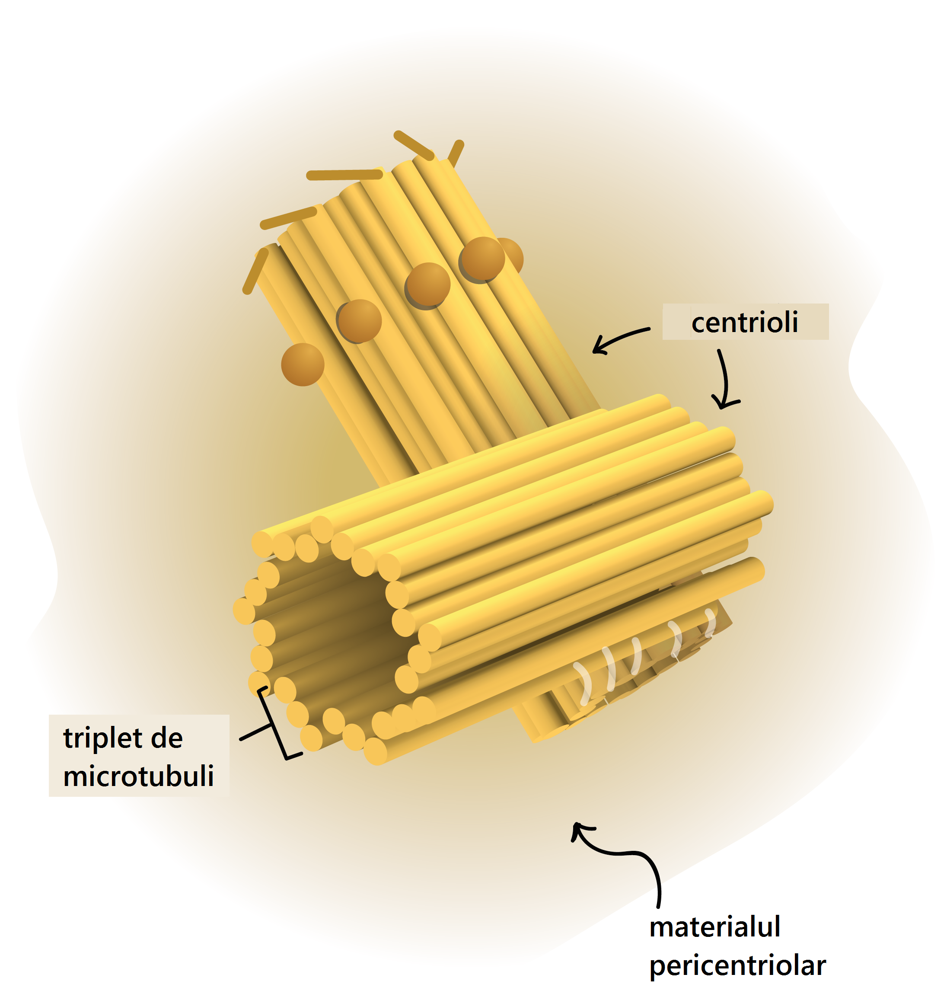
✔️ Prezent: în celula animală și fungi
❌ Lipsește: în neuroni
📍 Locație: Aproape de nucleu
⚙️ Structură: Zonă citoplasmatică + 1–2 centrioli
🎯 Rol: Diviziunea celulară, fus de diviziune
🧪 Lizozomi
Lizozomii sunt organite celulare care conțin enzime digestive. Aceștia au rolul de a descompune substanțele nutritive și de a elimina deșeurile din celulă.
⚪ sunt corpusculi sferici
🧫 conțin ~ 40 enzime digestive (hidrolitice)
🧬 se găsesc în număr mare în:
🛡️ celulele fagocitare
🩸 leucocite
⏳ celule îmbătrânite
🍽️ rol: digestia intracelulară
×
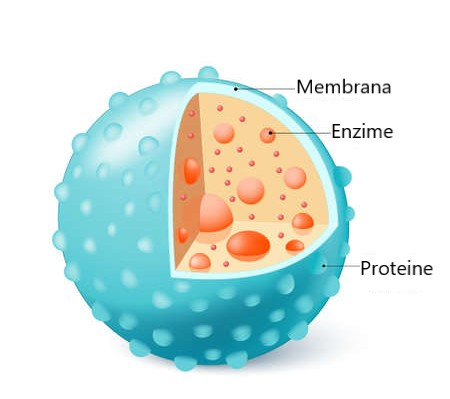
Aparatul Golgi
Aparatul Golgi este organitul celulei responsabil pentru procesarea și transportul substanțelor. Este format din:
totalitatea dictiozomilor,
cisterne (saculeti) turtiti și suprapuși care prezintă la capete macro/microvezicule,
rol: secretor (elaborarea secretiilor).
×
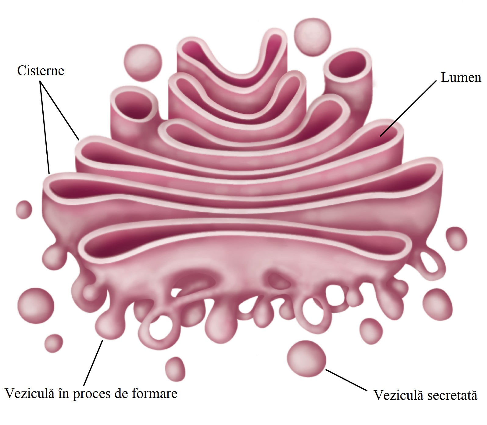
Reticulul Endoplasmatic
Reticulul endoplasmatic este un sistem de membrane interconectate cu roluri importante în sinteza, transportul și procesarea substanțelor celulare.
Este un sistem de canalicule intracitoplasmatice.
Face legătura dintre membrana celulară și cea nucleară.
Este mai dezvoltat în celule cu activitate metabolică intensă (ex: celulele hepatice).
Poate fi de 2 tipuri:
Reticul endoplasmatic neted (REN)
Reticul endoplasmatic rugos (REG) – are ribozomi pe suprafață
Roluri:
Transportul substanțelor prin citoplasmă
REN – sinteza lipidelor
REG – sinteza proteinelor
×
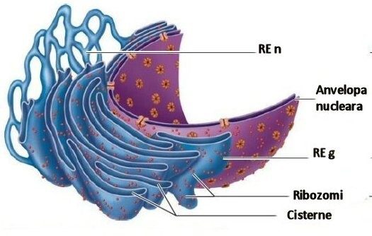
Diviziunea celulară
Diviziunea celulară este procesul prin care o celulă se împarte în două sau mai multe celule fiice. Există două tipuri principale de diviziune celulară: mitoză și meioză.
Diviziunea celulară este strict controlată de nucleu. Când celulele scapă de sub acest control, ele se pot înmulți haotic și pot forma tumori:
Benigne: nu se răspândesc la alte țesuturi
Maligne (canceroase): dau metastaze, adică se răspândesc în alte țesuturi și organe
Există două tipuri de diviziune celulară:
Directă (amitoză)
Celulele se înmulțesc rapid
Apare la:
a) procariote
b) celule eucariote aflate în diferențiere sau regenerare
Mitoza este un proces de diviziune celulară care are loc în celulele somatice. Acesta constă în patru etape principale: profaza, metafaza, anafaza și telofaza. Mitoza asigură formarea a două celule fiice identice dintr-o celulă mamă.
🔹 este cea mai lungă fază
🔹 crește volumul nucleului
🔹 dispar membrana nucleară + nucleolii
🔹 se individualizează cromozomii bicromatidici
🔹 diviziunea cromozomilor + deplasarea celor 2 centrioli la cei 2 poli
🔹 are loc fusul de diviziune
🔹 se vede cel mai clar fusul de diviziune (formarea completă) + poziționarea centriolilor la cei 2 poli
🔹 cromozomii bicromatidici sunt evidențiați
🔹 cele 2 cromatide sunt despărțite ⇒ cromozomi monocromatidici
🔹 cromozomii sunt agățați de centromer
🔹 cromozomii monocromatidici sunt atrași de cei 2 poli datorită contracției filamentelor fusului de diviziune
🔹 se dezorganizează cromozomii monocromatidici (iau formă de filamente de cromatină)
🔹 apare membrana nucleară + nucleolii
🔹 dispare fusul de diviziune
🔹 începe diviziunea citoplasmatică (citochineză)
🔹 apare o membrană despărțitoare ⇒ 2 celule fiice
🔹 urmează interfaza, unde celulele își dublează cantitatea de ADN și se reia ciclul
×
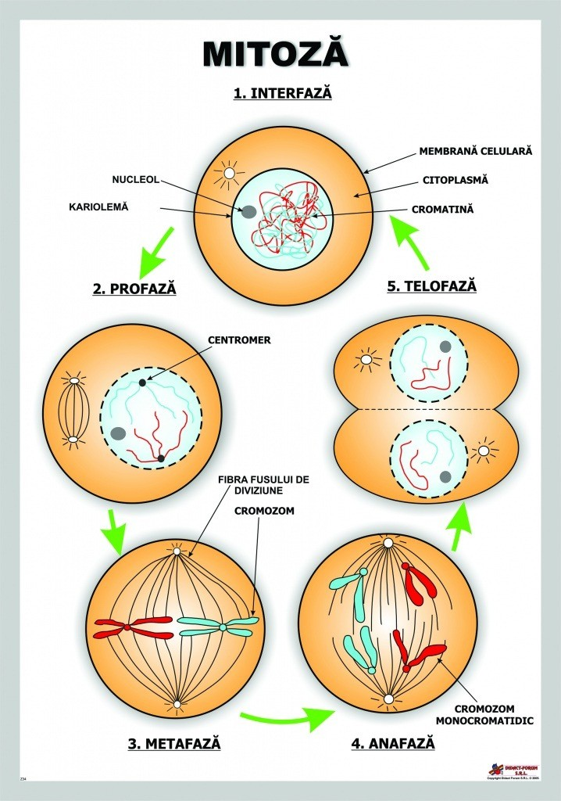
Meioza
Meioza este un tip special de diviziune celulară care are loc în celulele reproducătoare (gameți), prin care dintr-o celulă diploidă se obțin patru celule haploide, fiecare cu jumătate din numărul inițial de cromozomi.